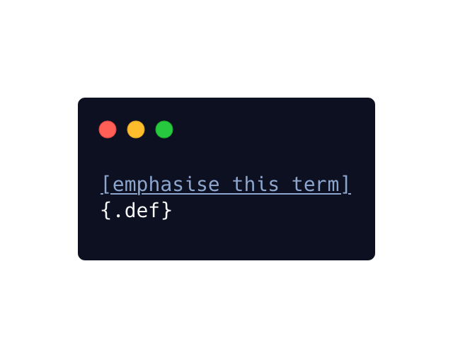
Using pandoc spans & filters to style classes of text in Quarto markdown documents.
A note on exporting Snowflake SQL query results to CSV files
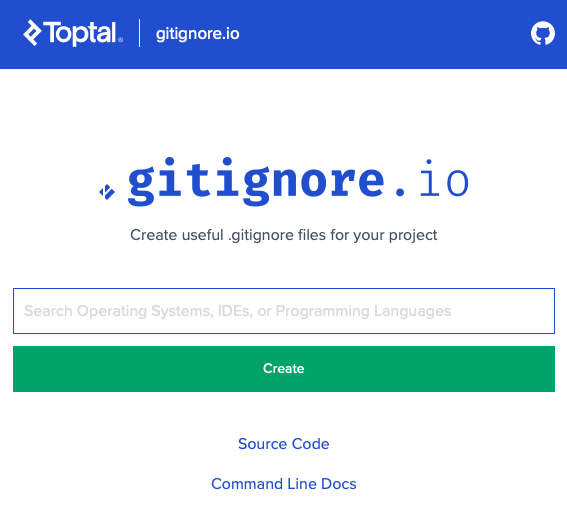
How I use git aliases and gitignore.io to always add a .gitignore file to my repositories before commiting other files or folders
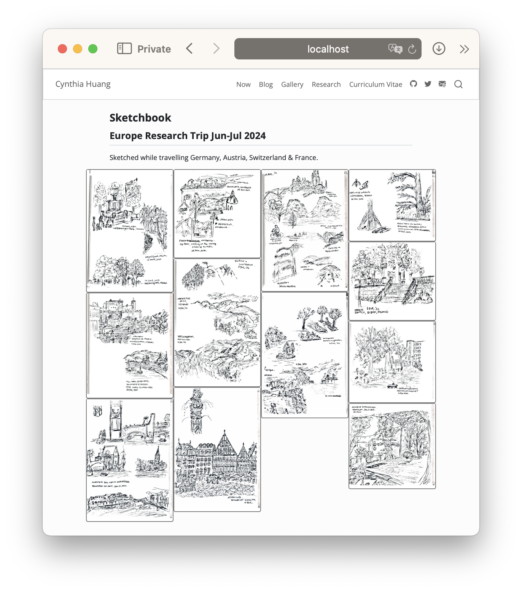
How I used masonry.js via Quarto extensions to create a cascading grid layout for a set of images without any Javascript skills.
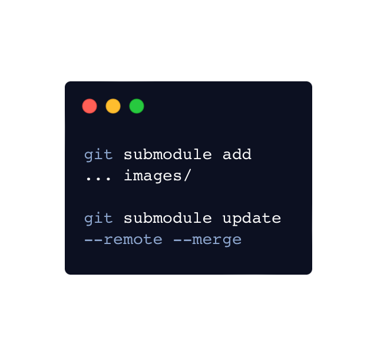
Notes on using git and git submodules to version control and share images across across multiple research papers and presentations
An opinionated take on writing better ggplot2 helper functions with calendar plots as a design case study
ggplot2
Some thoughts on including sample data generated by ChatGPT as data in R packages
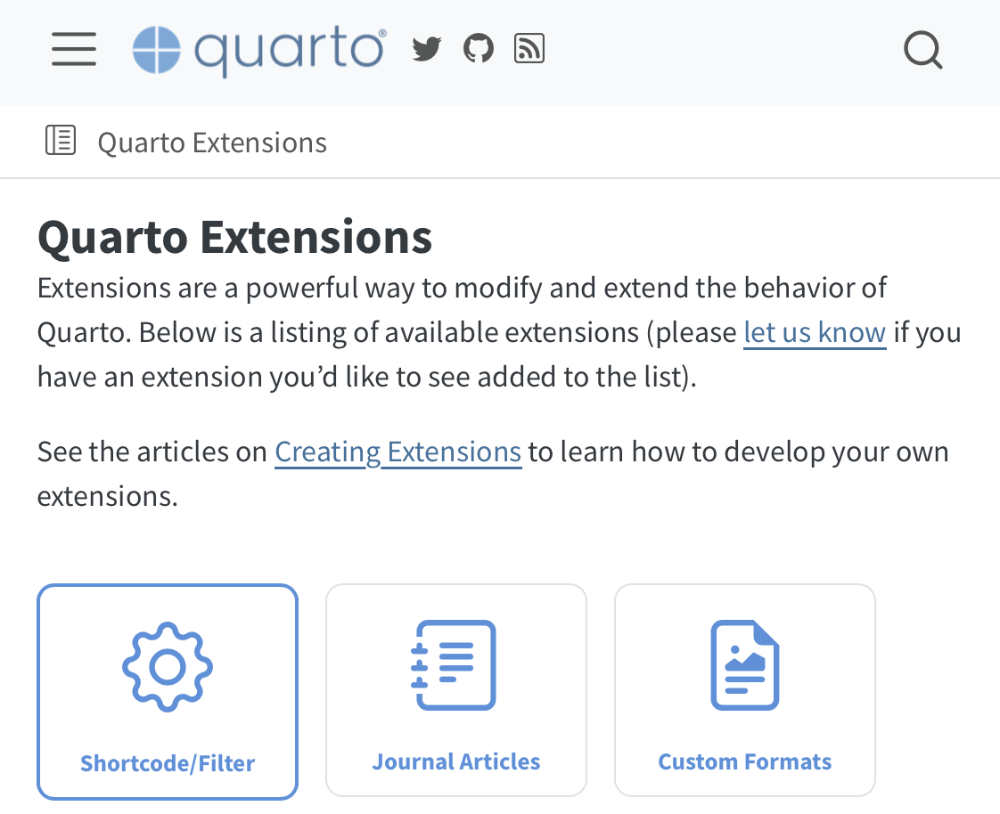
An attempt to clarify the different ways to reuse templates and extend the features of Quarto, along with a cheatsheet of Quarto CLI commands to add, update and remove extensions, use starter templates, and create projects.
add
update
remove
use
create
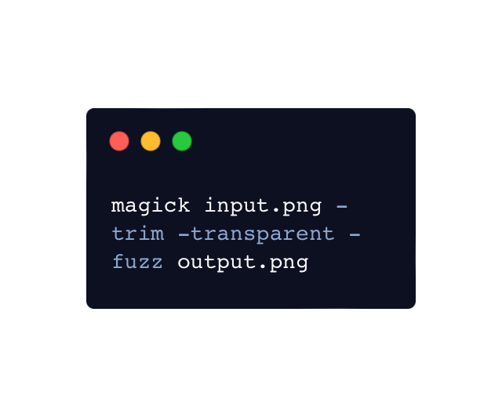
A cheatsheet of ImageMagick commands I use to edit vector drawings from my iPad for inclusion in (Quarto markdown) documents, presentations and webpages
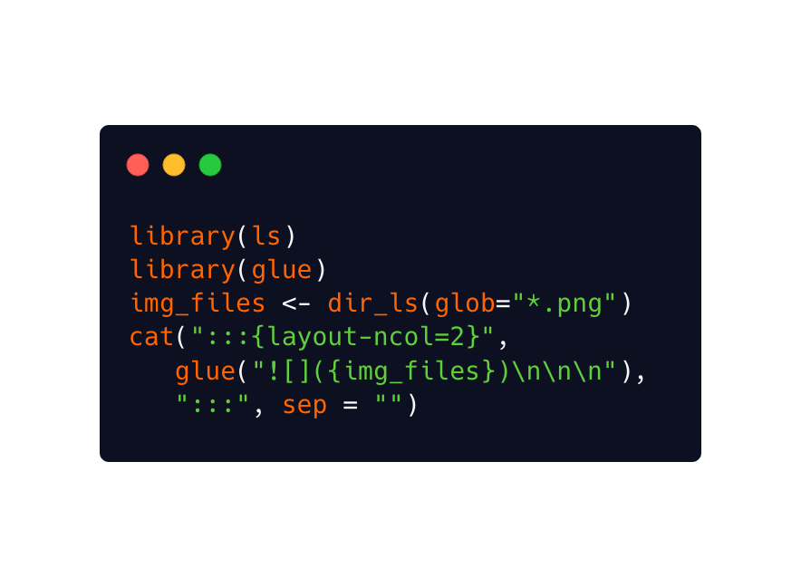
How to use ‘asis’ output from R code chunks to generate inline image links for an entire directory of images, AND arrange them using Quarto’s custom figure layout syntax
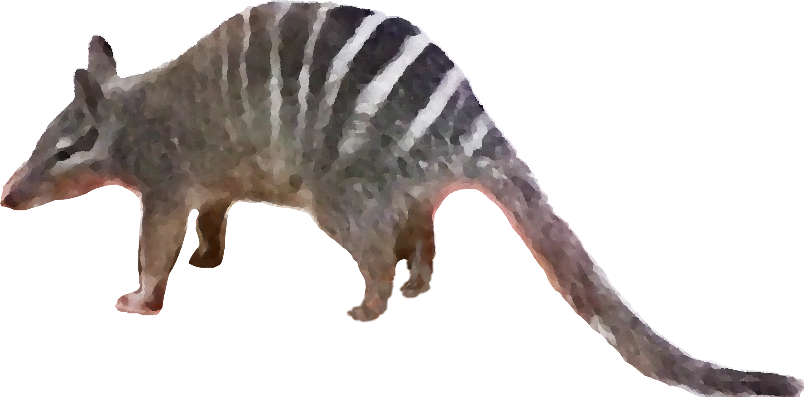
Hacky hours, coding clubs, communities of practice… whatever you call them, here are some reflections on organising and growing an internal community around research software and open science.
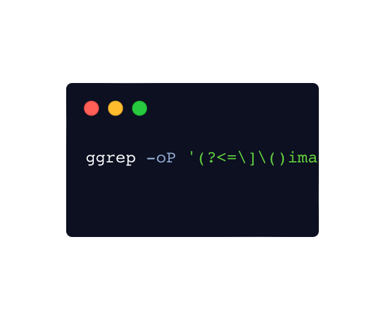
How to use the command line to clean up images and other files once they are no longer needed in a quarto document
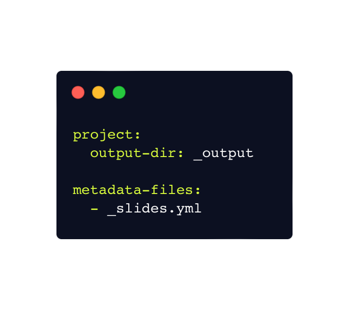
How I reused content and metadata across slides for a multi-day workshop with Quarto
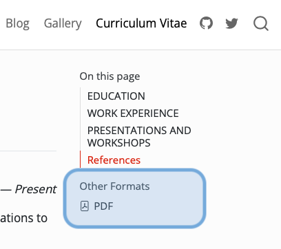
Forget LaTex. Publish multi-format Quarto documents using weasyprint and some CSS stylesheet magic!
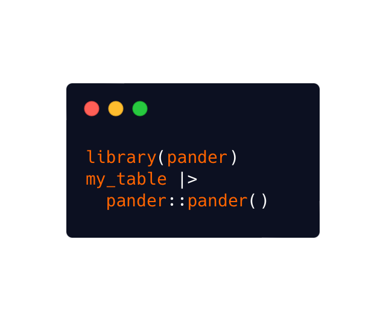
A short how-to on using pander in quarto/rmarkdown to generate markdown grid tables with bullet lists.
The closest thing to a mystery-thriller that I’ve experienced in the ggplot2 ecosystem
A short note on turning on Twitter Cards for my Quarto blog.
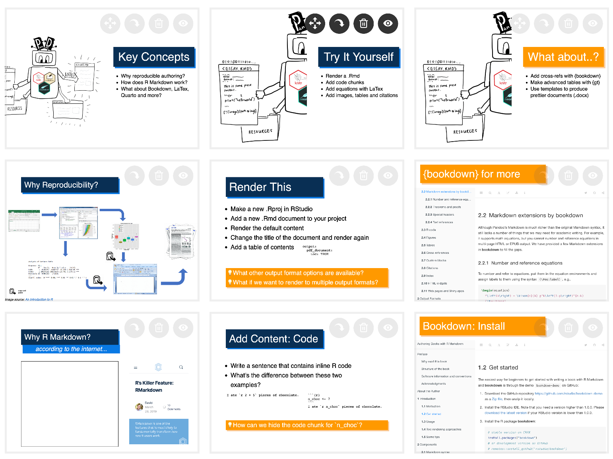
An experiment in using iframes and interactive slides to teach R Markdown
A collection of resources on how to insert emojis into your documents, when and how to use emojis, and a sprinkle of emoji trivia 🌟